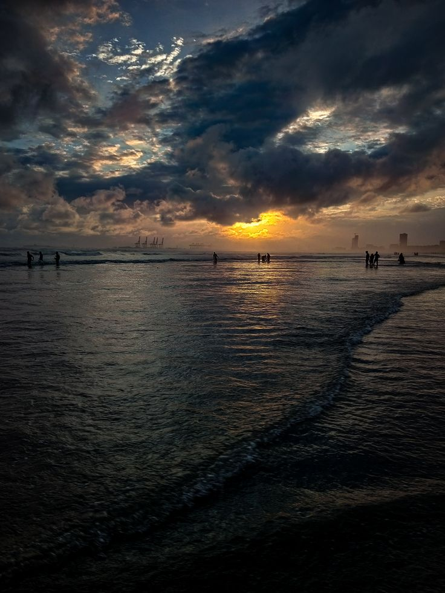

UniCulture
Bringing Cultures Together
Bringing Cultures Together
Pakistan's biggest city: colonial palaces, a long Arabian Sea coast, and some of the country's best street food.

Tap a card to know more. Opening days can change, so check before you go.
Tap a card to see where to go.
A few simple things that make your trip smoother and more respectful.
Prototype draft. Please verify details with local sources, and always check your government's latest travel advice before visiting. ✍ Suggest a correction